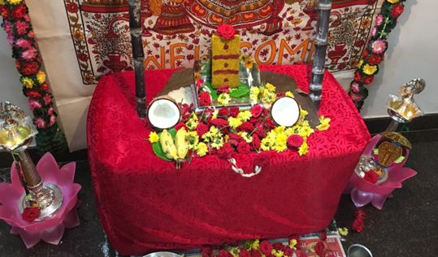
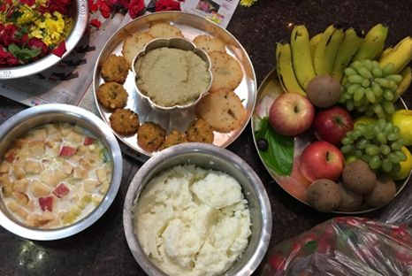

----------------------------------------------------------------------------------------
செஞ்சலம்மா குலதெய்வ பூஜை
----------------------------------------------------------------------------------------
பூஜா விதானம்
Preparation
தரையை துடைத்து - சிறிய கோலம் போட்டு - மனை போட்டு – இன்னொரு சிறிய கோலம் - வாழை இலை - 2 டம்ளர் அரிசி - 2 வெற்றிலை (முனை கிள்ளியது - எதிர்வாக்கில்) - அக்ஷிதை - 2 பூ –
Chenchalamma - கட்டுக்கல் –on Mandasana
1/2 kg சாமந்தி / ரோஜா பூஜைக்கு வைத்துக்கொள்ளவும்
முன் சிறிய பிள்ளையார் ஐ மஞ்சளில் செய்து வெற்றிலையில் வைக்கவும்
பெரிய விளக்கு – 2
பத்தி மாலை - 2 (ஒன்று செஞ்சலம்மாவிற்கு , இன்னொன்று சிறிய பிள்ளையாருக்கு)
கரும்பு ஒன்று இரு பக்கம் வைக்கலாம்

நைவேத்தியம்
பொங்கல், சக்கரை பொங்கல், தயிர் பூரி , வடை, பச்சாமிர்தம்
Pongal, Sakkarai pongal, Perufu poori, vada, panchaamirtham
5 fruits (4 fruits +1 coconut), 10 vethalai/beetle leaves
பஞ்ச பாத்திரம் - with water and spoon- apply turmeric, sandal, kumkum and akshadhai + 2 flowers

----------------------------------------------------------------------------------------
சிறிய பிள்ளையாருக்கு பூஜை தொடங்கவும்…
----------------------------------------------------------------------------------------
Lakshmi Ashtothram in Tamil – லக்ஷ்மீ அஷ்டோத்ரம்
ஓம் ப்ரக்ருத்யை நம꞉ ।
ஓம் விக்ருத்யை நம꞉ ।
ஓம் வித்³யாயை நம꞉ ।
ஓம் ஸர்வபூ⁴தஹிதப்ரதா³யை நம꞉ ।
ஓம் ஶ்ரத்³தா⁴யை நம꞉ ।
ஓம் விபூ⁴த்யை நம꞉ ।
ஓம் ஸுரப்⁴யை நம꞉ ।
ஓம் பரமாத்மிகாயை நம꞉ ।
ஓம் வாசே நம꞉ । 9
ஓம் பத்³மாலயாயை நம꞉ ।
ஓம் பத்³மாயை நம꞉ ।
ஓம் ஶுசயே நம꞉ ।
ஓம் ஸ்வாஹாயை நம꞉ ।
ஓம் ஸ்வதா⁴யை நம꞉ ।
ஓம் ஸுதா⁴யை நம꞉ ।
ஓம் த⁴ந்யாயை நம꞉ ।
ஓம் ஹிரண்மய்யை நம꞉ ।
ஓம் லக்ஷ்ம்யை நம꞉ । 18
ஓம் நித்யபுஷ்டாயை நம꞉ ।
ஓம் விபா⁴வர்யை நம꞉ ।
ஓம் அதி³த்யை நம꞉ ।
ஓம் தி³த்யை நம꞉ ।
ஓம் தீ³ப்தாயை நம꞉ ।
ஓம் வஸுதா⁴யை நம꞉ ।
ஓம் வஸுதா⁴ரிண்யை நம꞉ ।
ஓம் கமலாயை நம꞉ ।
ஓம் காந்தாயை நம꞉ । 27
ஓம் காமாக்ஷ்யை நம꞉ ।
ஓம் க்ரோத⁴ஸம்ப⁴வாயை நம꞉ ।
ஓம் அநுக்³ரஹபராயை நம꞉ ।
ஓம் பு³த்³த⁴யே நம꞉ ।
ஓம் அநகா⁴யை நம꞉ ।
ஓம் ஹரிவல்லபா⁴யை நம꞉ ।
ஓம் அஶோகாயை நம꞉ ।
ஓம் அம்ருதாயை நம꞉ ।
ஓம் தீ³ப்தாயை நம꞉ । 36
ஓம் லோகஶோகவிநாஶிந்யை நம꞉ ।
ஓம் த⁴ர்மநிலயாயை நம꞉ ।
ஓம் கருணாயை நம꞉ ।
ஓம் லோகமாத்ரே நம꞉ ।
ஓம் பத்³மப்ரியாயை நம꞉ ।
ஓம் பத்³மஹஸ்தாயை நம꞉ ।
ஓம் பத்³மாக்ஷ்யை நம꞉ ।
ஓம் பத்³மஸுந்த³ர்யை நம꞉ ।
ஓம் பத்³மோத்³ப⁴வாயை நம꞉ । 45
ஓம் பத்³மமுக்²யை நம꞉ ।
ஓம் பத்³மநாப⁴ப்ரியாயை நம꞉ ।
ஓம் ரமாயை நம꞉ ।
ஓம் பத்³மமாலாத⁴ராயை நம꞉ ।
ஓம் தே³வ்யை நம꞉ ।
ஓம் பத்³மிந்யை நம꞉ ।
ஓம் பத்³மக³ந்தி⁴ந்யை நம꞉ ।
ஓம் புண்யக³ந்தா⁴யை நம꞉ ।
ஓம் ஸுப்ரஸந்நாயை நம꞉ । 54
ஓம் ப்ரஸாதா³பி⁴முக்²யை நம꞉ ।
ஓம் ப்ரபா⁴யை நம꞉ ।
ஓம் சந்த்³ரவத³நாயை நம꞉ ।
ஓம் சந்த்³ராயை நம꞉ ।
ஓம் சந்த்³ரஸஹோத³ர்யை நம꞉ ।
ஓம் சதுர்பு⁴ஜாயை நம꞉ ।
ஓம் சந்த்³ரரூபாயை நம꞉ ।
ஓம் இந்தி³ராயை நம꞉ ।
ஓம் இந்து³ஶீதலாயை நம꞉ । 63
ஓம் ஆஹ்லாத³ஜநந்யை நம꞉ ।
ஓம் புஷ்ட்யை நம꞉ ।
ஓம் ஶிவாயை நம꞉ ।
ஓம் ஶிவகர்யை நம꞉ ।
ஓம் ஸத்யை நம꞉ ।
ஓம் விமலாயை நம꞉ ।
ஓம் விஶ்வஜநந்யை நம꞉ ।
ஓம் துஷ்ட்யை நம꞉ ।
ஓம் தா³ரித்³ர்யநாஶிந்யை நம꞉ । 72
ஓம் ப்ரீதிபுஷ்கரிண்யை நம꞉ ।
ஓம் ஶாந்தாயை நம꞉ ।
ஓம் ஶுக்லமால்யாம்ப³ராயை நம꞉ ।
ஓம் ஶ்ரியை நம꞉ ।
ஓம் பா⁴ஸ்கர்யை நம꞉ ।
ஓம் பி³ல்வநிலயாயை நம꞉ ।
ஓம் வராரோஹாயை நம꞉ ।
ஓம் யஶஸ்விந்யை நம꞉ ।
ஓம் வஸுந்த⁴ராயை நம꞉ । 81
ஓம் உதா³ராங்கா³யை நம꞉ ।
ஓம் ஹரிண்யை நம꞉ ।
ஓம் ஹேமமாலிந்யை நம꞉ ।
ஓம் த⁴நதா⁴ந்யகர்யை நம꞉ ।
ஓம் ஸித்³த⁴யே நம꞉ ।
ஓம் ஸ்த்ரைணஸௌம்யாயை நம꞉ ।
ஓம் ஶுப⁴ப்ரதா³யை நம꞉ ।
ஓம் ந்ருபவேஶ்மக³தாநந்தா³யை நம꞉ ।
ஓம் வரலக்ஷ்ம்யை நம꞉ । 90
ஓம் வஸுப்ரதா³யை நம꞉ ।
ஓம் ஶுபா⁴யை நம꞉ ।
ஓம் ஹிரண்யப்ராகாராயை நம꞉ ।
ஓம் ஸமுத்³ரதநயாயை நம꞉ ।
ஓம் ஜயாயை நம꞉ ।
ஓம் மங்க³லா தே³வ்யை நம꞉ ।
ஓம் விஷ்ணுவக்ஷ꞉ஸ்த²லஸ்தி²தாயை நம꞉ ।
ஓம் விஷ்ணுபத்ந்யை நம꞉ ।
ஓம் ப்ரஸந்நாக்ஷ்யை நம꞉ । 99
ஓம் நாராயணஸமாஶ்ரிதாயை நம꞉ ।
ஓம் தா³ரித்³ர்யத்⁴வம்ஸிந்யை நம꞉ ।
ஓம் தே³வ்யை நம꞉ ।
ஓம் ஸர்வோபத்³ரவவாரிண்யை நம꞉ ।
ஓம் நவது³ர்கா³யை நம꞉ ।
ஓம் மஹாகால்யை நம꞉ ।
ஓம் ப்³ரஹ்மாவிஷ்ணுஶிவாத்மிகாயை நம꞉ ।
ஓம் த்ரிகாலஜ்ஞாநஸம்பந்நாயை நம꞉ ।
ஓம் பு⁴வநேஶ்வர்யை நம꞉ । 108 |
இதி ஸ்ரீ லக்ஷ்மீ அஷ்டோத்ரம் ||
அஷ்ட லட்சுமி ஸ்தோத்திரம்
1. ஆதிலட்சுமி
ஸூமநஸ வந்தித ஸூந்தரி மாதவி
சந்த்ர சகோதரி ஹேமமயே
முநிகண மண்டித மோக்ஷ ப்ரதாயினி
மஞ்சுள பாக்ஷிணி வேதநுதே
பங்கஜ வாஸினி தேவஸூ பூஜித
ஸத்குண வர்ஷினி சாந்தியுதே
ஜெய ஜெய ஹே மதுஸூதன காமினி
ஆதிலெக்ஷ்மி ஸதா பாலயமாம்
2. தான்ய லட்சுமி
அபிகலி கல்மஷ நாசினி காமினி
வைதிக ரூபிணி வேதமயே
க்ஷீர சமுத்பவ மங்கள ரூபிணி
மந்த்ர நிவாஸினி மந்த்ரநுதே
மங்கள தாயிணி அம்புஜ வாஷினி
தேவ கணார்ச்சித பாதயுதே
ஜெய ஜெய ஹே மதுஸூதன காமினி
தான்யலக்ஷ்மி ஸதா பாலயமாம்
3. தைரிய லட்சுமி
ஜயவர வர்ணனி வைஷ்ணவி பார்கவி
மந்த்ர ஸ்வரூபிணி மந்த்ரமயே
ஸூரகண பூஜிய சீ க்ர பலப்ரத
ஞான விகாஸினி சாஸ்த்ர நுதே
பவபய ஹாரிணி பாப விமோசனி
சாது ஜநாச்ரித பாதயுதே
ஜெய ஜெய ஹே மதுஸூதன காமினி
தைர்யலக்ஷ்மி ஸதா பாலயமாம்
4. கஜலட்சுமி
ஜய ஜய துர்கதி நாசினி காமினி
சர்வ பலப்ரத சாஸ்த்ரமயே
ரதகஜ துரசு பதாதி சமாவ்ருத
பரிஜன மண்டித லோகநுதே
ஹரிஹர ப்ரம்ம ஸூ பூஜித சேவித
தாப நிவாரிணி பாதயுதே
ஜெய ஜெய ஹே மதுஸூதன காமினி
கஜலக்ஷ்மி ரூபணே பாலயமாம்
5. சந்தான லட்சுமி
அயிதக வாஹினி மோஹினி சக்ரிணி
ராக விவர்த்தினி ஞானமயே
குணகண வாரிதி லோக ஹிதைஷினி
ஸ்வர ஸப்த பூஷித கானறுதே
சகல ஸூராஸூர தேவ முநீஸ்வர
மாநவ வந்தித பாத யுதே
ஜெய ஜெய ஹே மது ஸூதன காமினி
சந்தான லக்ஷ்மி பாலயமாம்
6. விஜய லட்சுமி
ஜய கமலாசனி சத்கதி தாயினி
ஞான விகாஸினி கானமயே
அனுதின மர்ச்சித குங்கும தூசர
பூஷித வாஸித வாத்ய நுதே
கனகதாரா ஸ்துதி வைபவ வந்தித
சங்கர தேசித மான்யபதே
ஜெய ஜெய ஹே மதுஸூதன காமினி
விஜயலக்ஷ்மி ஸதா பாலயமாம்
7. வித்யா லட்சுமி
ப்ரணத ஸூரேஸ்வரி பாரதி பார்வதி
சோக விநாசினி ரத்னமயே
மணிமய பூக்ஷித கர்ண விபூஷண
சாந்தி ஸமாவ்ருத ஹாஸ்யமுகே
நவநிதி தாயினி கலிகல ஹாரிணி
காமித பலப்ரத ஹஸ்தயுதே
ஜெய ஜெய ஹே மதுஸூதன காமினி
வித்யாலக்ஷ்மி ஸதா பாலயமாம்
8. தனலட்சுமி
திமிதிமி திந்திமி திந்திமி திந்திமி
துந்துபி நாத ஸூ பூர்ண மயே
கும கும குங்கும குங்கும குங்கும
சங்க நிநாத ஸூவாத் ய நுதே
வேத புராணே திஹாச ஸூ பூஜித
வைதிக மார்க ப்ரதச்ச யுதே
ஜெய ஜெய ஹே மதுஸூதன காமினி
தனலக்ஷ்மி ரூபணே பாலயமாம்
Shri Mahalakshmi Ashtakam
நமஸ்தேஸ்து மஹாமாயே ஸ்ரீ பீடே ஸுரபூஜித
ஷங்க சக்ர கதா ஹஸ்தே மஹாலக்ஷ்மி நமஸ்துதே
நமஸ்தே கருடாரூடே கோலாஸுர பயங்கரி
ஸர்வபாப ஹரே தேவி மஹாலக்ஷ்மி நமஸ்துதே
ஸர்வக்நே சர்வ வரதே ஸர்வதுஷ்ட பயங்கரி
ஸர்வதுக்க ஹரே தேவி மஹாலக்ஷ்மி நமஸ்துதே
ஸித்தி புத்தி ப்ரதே தேவி புக்திமுக்தி ப்ரதாயினி
மந்த்ர மூர்த்தே ஸதாதேவி மஹாலக்ஷ்மி நமஸ்துதே
ஆத்யந்த ரஹிதே தேவி ஆதிசக்தி மஹேஸ்வரி
யோகக்நே யோக ஸ்ம்பூ தேவி மஹாலக்ஷ்மி நமஸ்துதே
ஸ்தூல ஸூக்ஷ்ம மஹாரௌத்ரே மஹாசக்தி மஹோதரே
மஹாபாபஹரே தேவி மஹாலக்ஷ்மி நமஸ்துதே
பத்மாஸன ஸ்திதே தேவி பரப்பிரஹ்ம ஸ்வரூபினி
பரமே ஸி ஜகன்மாத: மஹாலக்ஷ்மி நமஸ்துதே
ஸ்வேதாம் பரதரே தேவி நானாலங்கார பூஷிதே
ஜகத்ஸ்திதே ஜகன்மாத: மஹாலக்ஷ்மி நமஸ்துதே
மஹாலக்ஷ்மியஷ்டகம் ஸ்தோத்ரம் ய : படேத் பக்திமான் நர :
ஸர்வ ஸித்தி மவாப்னோதி ராஜ்யம் ப்ராப்னோதி ஸர்வதா
ஏக காலம் படேந் நித்யம் மஹா பாப விநாஷணம்
த்விகாலம் ய : படேந்நித்யம் தனதான்ய ஸமன்வித:
த்ரிகாலம் ய படேந்நித்யம் மஹா ஷத்ரு விநாஷனம்
மஹாலக்ஷ்மீர் பவேந்நித்யம் ப்ரஸன்ன வரதா ஸூபா
ஊதுபத்தி
"தசாங்கம் குக்குலோ பேதம் ஸூகத்திம்ச மனோஹரம். கபிலாக்ருத ஸம்யுக்தம் தூபோயம் ப்ரதி க்ருஹ்யதாம்
தூபம் ஸமர்பயாமி தூபாநன்தரம் ஆசமனீயம் ஸமர்பயாமி" புஷ்பைஹி பூஜயாமி .
நைவேத்தியம்
தேங்காய் உடைக்கவம்
வெற்றிலை முனை, பழங்கள் கிள்ளவும், தண்ணீர் தெளிக்க
ஓம் ப்ராணாய ஸ்வாஹா
ஓம் அபானாய ஸ்வாஹா
ஓம் வ்யாநாய ஸ்வாஹா
ஓம் உதானாய ஸ்வாஹா
ஓம் ஸமானாய ஸ்வாஹா
ஓம் ப்ரஹ்மணே ஸ்வாஹா
இறைவனுக்கு ஊட்டுவது போல்
கற்பூர ஹாரதி
ஓம் ராஜாதி ராஜாய ப்ரஸஹ்ய சாஹினே நமோ வயம் வைச்ரவணாய குர்மஹே
ஸமே காமான் காம காமாய மஹ்யம் கமேச்வரோ வைச்ரவணோ ததாது
குபேராய வைச்ரவணாய மஹாராஜாய நம:
கற்பூர நீராஞ்ஜனம் ஸமர்ப்பயாமி , ஆசமனியம் ஸமர்ப்பயாமி, புஷ்பைஹி பூஜயாமி .
மற்றவை
பெண்கள் ஆர்த்தி எடுத்து பாட்டு பாடவும்
முற்றிற்று